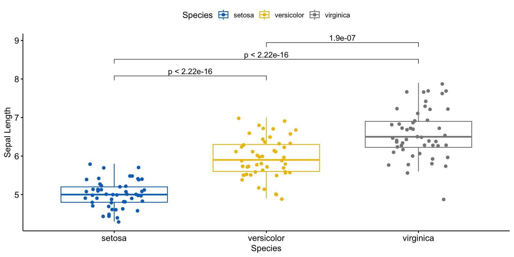

2026-05-14
开源免费的生态
极强的可重复性
丰富的扩展包，与学术前沿接轨
强大的多格式输出能力
一份源文件，多格式输出（HTML/PDF/Word）
基于R Markdown/Quarto
思维转换的阵痛
边学边忘的挫败
万包林立的迷茫
满屏红字的暴击
4.0 环境准备
4.1 人口统计学与临床特征表
4.2 结局指标对比
4.3 组间对比可视化
4.4 回归结果的表格化输出
请务必先运行下方代码
在尝试后续页面的任何示例代码之前，请确保您已经在自己的电脑上运行了这段安装R包的代码。
| Characteristic | Drug A N = 981 |
Drug B N = 1021 |
p-value2 |
|---|---|---|---|
| Age | 47 (15) | 47 (14) | 0.7 |
| Unknown | 7 | 4 | |
| Marker Level (ng/mL) | 1.02 (0.89) | 0.82 (0.83) | 0.085 |
| Unknown | 6 | 4 | |
| T Stage | 0.9 | ||
| T1 | 28 (29%) | 25 (25%) | |
| T2 | 25 (26%) | 29 (28%) | |
| T3 | 22 (22%) | 21 (21%) | |
| T4 | 23 (23%) | 27 (26%) | |
| Grade | 0.9 | ||
| I | 35 (36%) | 33 (32%) | |
| II | 32 (33%) | 36 (35%) | |
| III | 31 (32%) | 33 (32%) | |
| Tumor Response | 28 (29%) | 33 (34%) | 0.5 |
| Unknown | 3 | 4 | |
| Patient Died | 52 (53%) | 60 (59%) | 0.4 |
| Months to Death/Censor | 20.2 (5.0) | 19.0 (5.5) | 0.14 |
| 1 Mean (SD); n (%) | |||
| 2 Wilcoxon rank sum test; Pearson’s Chi-squared test | |||
| Characteristic | Drug A N = 981 |
Drug B N = 1021 |
Difference2 | 95% CI2 | p-value2 |
|---|---|---|---|---|---|
| Age | 47.01 (14.71) | 47.45 (14.01) | -0.44 | -4.6, 3.7 | 0.8 |
| Marker Level (ng/mL) | 1.02 (0.89) | 0.82 (0.83) | 0.20 | -0.05, 0.44 | 0.12 |
| Tumor Response | 29 | 34 | -4.2% | -18%, 9.9% | 0.6 |
| 1 Mean (SD); % | |||||
| 2 Welch Two Sample t-test; 2-sample test for equality of proportions with continuity correction | |||||
| Abbreviation: CI = Confidence Interval | |||||
library(ggpubr)
ggboxplot(iris, x = "Species", y = "Sepal.Length",
color = "Species", palette = "jco",
ylab = "Sepal Length", xlab = "Species",
add = "jitter") +
stat_compare_means(comparisons = list(c("setosa", "versicolor"),
c("setosa", "virginica"),
c("versicolor", "virginica")),
method = "t.test",
label = "p.format",
hide.ns = TRUE)
| Characteristic | log(OR) | 95% CI | p-value |
|---|---|---|---|
| Age | 0.02 | 0.00, 0.04 | 0.091 |
| T Stage | |||
| T1 | — | — | |
| T2 | -0.54 | -1.4, 0.31 | 0.2 |
| T3 | -0.06 | -0.95, 0.82 | 0.9 |
| T4 | -0.23 | -1.1, 0.64 | 0.6 |
| Abbreviations: CI = Confidence Interval, OR = Odds Ratio | |||
2小时R入门 | © 2026 顶刊研习社, Li Zongzhang